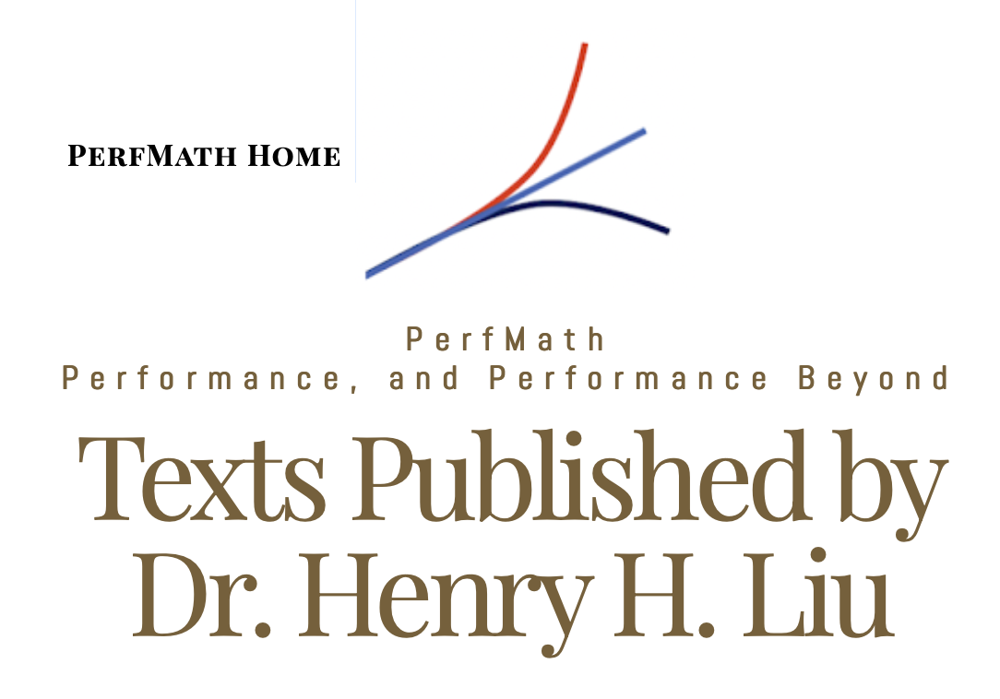

Downloads for Texts Published by Dr. Henry H. Liu
1. Machine Learning: A Quantitative Approach (available on Amazon )
Click here and bookmark the link for all math formulas.
Click here and bookmark the link for all colored figures.
Download source code here. Refer to the README.txt file in the downloaded file about how to import the samples into
PyDev on Eclipse.
Click here and bookmark the link for solutions for all exercises.
Download Appendix B: Multi_Layer_Perceptron_Fuel_Economy.pdf for Chapter 9 here.
Download Appendix C: CNN_Examples_with_Caffe_and_YOLOv3_and_PyTorch.pdf for Chapter 10 here .
Download the C project ml01 for exploring gemm (ml01_gemm_yolov3.zip) here .
Download Appendix D: RNN_LSTM_Example_Implementations_with_Keras_TensorFlow.pdf for Chapter 11 here .
Download TOC here
2. Algorithms with Implementations in C: A Quantitative Approach (available on Amazon )
Download source code here .
3. C++ Programming: A Quantitative Approach (available on Amazon)
Click here to download the sample programs for this book.
Click here to download the Appendix A for setting up cygwin on Windows.
4. Java Performance and Scalability: A Quantitative Approach (available on Amazon)
Click here to download the programs for this book.
Please refer to the ReadMe files included in the download and the instructions contained in the book for
how to run these programs.
Click here to download the Harp utility for optimizing the performance of Web-based apps
Click here to download Appendix E (Linux System and Performance Utilities) and F (The Harp Utility for
Optimizing UI Performance)
5. Spring 4 for Developing Enterprise Applications: An End-to-End Approach ((available on Amazon)
After 09/13/2015: Download the SOBA 4.3 sample from here .
(Download the Spring 4 jQuery/Ajax demo here ).
-------------------------
Prior to 09/13/2015: Download the SOBA sample from here . Updates can be found from here .
-------------------------
MyNotes - a simpler sample featuring Spring 4, Hibernate 4, Maven 3 and MySQL
MyNotes (Eclipse/Maven Project)
mn_db_scripts for MySQL
6. (Latest Edition) Hadoop 2 Essentials: An End-to-End Approach (available on Amazon)
After Feb 22, 2015: Download here for the project that works with the latest Hadoop version of 2.6.0
For Hadoop 2.2.0: Config files and MapReduce programs are here . Updates can be found from here .
7. iOS 8 Programming (available on Amazon)
Download project files from here . Latest Updates here.
Download the newly-added TapTest project files from here
Xcode 6.0.1 with iPhone 6: View TapTest icon here and screenshot here
8. iOS 7 Programming: A Quantitative Approach (available on Amazon)
Download project files from here
9. Java Concurrent Programming: A Quantitative Approach (available on Amazon)
Download source code here
Download colored images here
Download TOC and Chapter 1 here
10. Software Performance and Scalability: A Quantitative Approach (available on Amazon)
Download source code here